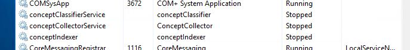

Overview
This article describes how to change or replace the server on which Netwrix Data Classification (NDC) is running.
Instructions
-
Stop/disable all NDC services on the application server (conceptClassifier, conceptIndexer, conceptCollector).

NOTE: You can also disable the NDC services using the Service Viewer located at:
C:\Program Files\ConceptSearching\ServiceViewer(by default). -
Back up the NDC database and the files in the NDC Index at
C:\Program Files\ConceptSearching\ConceptDB(by default). -
Prior to installation, ensure that the necessary software pre-requisites are in place.
-
Install the same version of NDC on the new server, pointing to the original database location with the same service account. The installer should detect an existing NDC schema. (You may refer to Install Netwrix Data Classification for instructions on NDC installation.)
NOTE: The account being used for the installation of NDC should ideally be the same service account used to connect with the SQL database, and this account will need local admin rights on the new server.
-
During the install, ensure that the box to stop services on application start is checked.
-
Copy the backed-up Index files from the old server to the new server's index location (
C:\Program Files\ConceptSearching\ConceptDBby default). -
Start all services on the new server, and collection should resume as normal. The conceptCollector/Indexer/Classifier services should stay disabled on the old server to prevent re-connecting to the database. NDC can be uninstalled once the migration is successful.